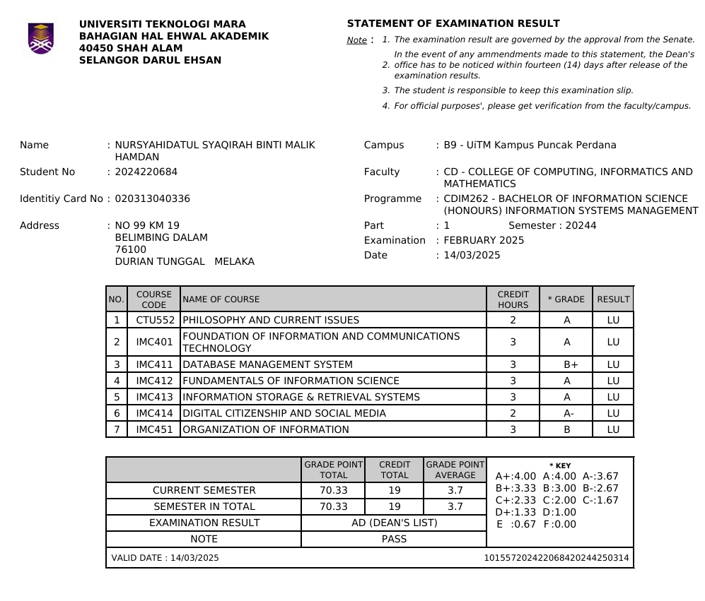
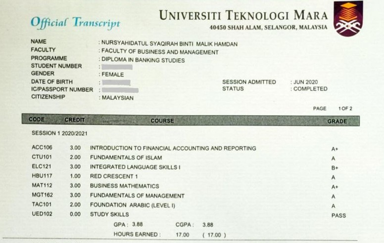
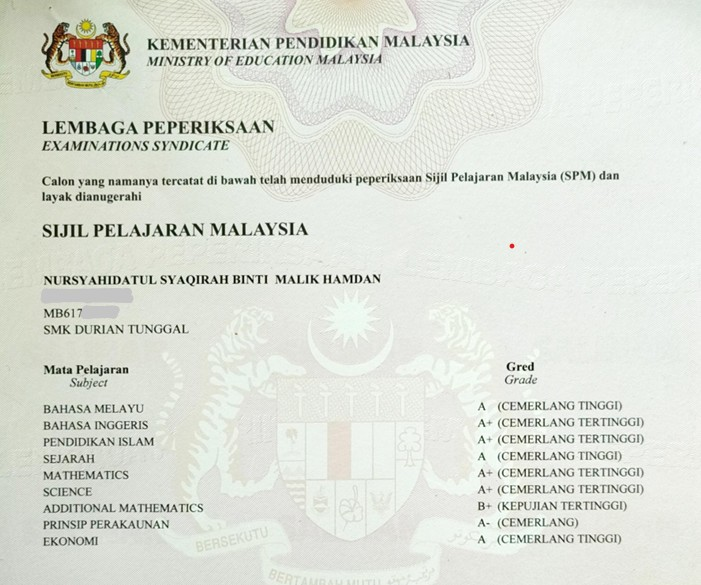

Education
| Year |
Institution |
Program |
Achievements |
Certificate / Transcript |
| 2024–Current |
Universiti Teknologi MARA, Puncak Perdana, Selangor |
Bachelor of Information Science (Honours) Information Systems Management |
- CGPA: 3.70
- Dean's list 1st semester
- Exco of Public Relations (PR) for Association of Information System (AiMS)
|

|
| 2020–2023 |
Universiti Teknologi MARA, Alor Gajah, Melaka |
Diploma in Banking Studies |
- CGPA: 3.55
- Dean's list 4 out of 5 semesters
- MUET: Band 4
|

|
| 2015–2019 |
Sekolah Menengah Kebangsaan Durian Tunggal |
Sijil Pelajaran Malaysia |
|

|
|